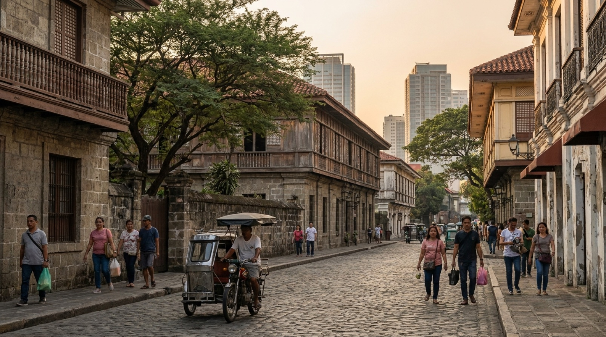
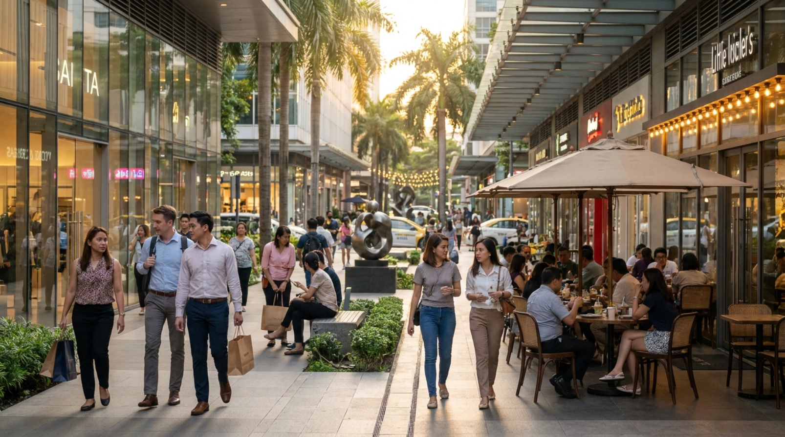
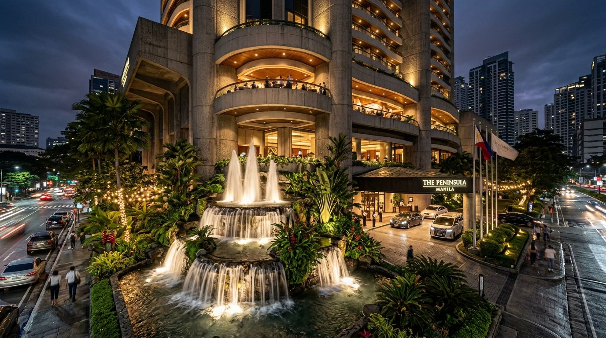

A Tale of Two Cities
Manila offers a fascinating juxtaposition of historical colonial elegance inside Intramuros and hyper-modern luxury shopping, rooftop dining, and high-rise living in Bonifacio Global City.

Historic Intramuros
Walk through 16th-century stone gates, Fort Santiago, San Agustin Church, and cobble-paved courtyards built during the Spanish East Indies era.

Bonifacio Global City (BGC)
Discover vibrant pedestrian avenues, luxury fashion houses, speakeasy cocktail lounges, and Michelin-rated international dining concepts.

World-Class Hospitality
Indulge in 5-star heritage stays, high tea in grand hotel lobbies, and VIP airport fast-track service managed by Pandora Travel.
Signature Manila Moments
Intramuros Bamboo Bike & Vintage Motorcycle Tour
Ride hand-crafted eco bamboo bikes or ride in a vintage sidecar through 400-year-old plazas, hidden art galleries, and historic defense bastions with your private local historian.
Inquire About This Tour →Private BGC Gastronomy & Speakeasy Crawl
Experience Manila's booming culinary scene. Sample modern Filipino tasting menus, artisanal craft cocktails behind secret bank vaults, and panoramic rooftop views of the skyline.
Inquire About This Tour →Featured Luxury Journeys
The Ultimate 12-Day Philippines Escape
- VIP Fast-Track Airport Arrival & Private Intramuros Heritage Tour
- Private Outrigger Banca Lagoons & Kayangan Lake Exploration
- Boracay White Sand Sunset Sailing & 5-Star Beachfront Luxury

Philippines: 21-Day Premium Family Journey
- UNESCO Batad Rice Terraces Private Trek & Sagada Echo Valley
- Bohol Chocolate Hills, Tarsier Sanctuary & Amorita Villa Stay
- Moalboal Sardine Run Swim & Shangri-La Mactan Seaside Luxury

Handpicked Manila Accommodations
The Peninsula Manila
The legendary 'Jewel in the Capital's Crown'. Renowned for its iconic high-ceiling lobby, opulent suites, and world-class concierge service.
Inquire Hotel Booking →Shangri-La at The Fort
Contemporary luxury in the heart of BGC's premier shopping and dining district, featuring panoramic city vistas and fine dining venues.
Inquire Hotel Booking →Manila Travel Concierge Guide
Getting There & Transfers
Arrive via Ninoy Aquino International Airport (MNL). Pandora Travel provides private air-conditioned chauffeured vans and VIP airport fast-track clearance.
Best Season
November through April features dry, pleasant weather ideal for city walking tours, rooftop dining, and outdoor heritage exploration.
Culinary Highlights
Try traditional Kare-Kare (peanut stew), Lechon, halo-halo desserts, and modern elevated Filipino tasting menus in BGC.
Concierge Tip
Combine your Manila stay with direct morning flights onward to El Nido (ENI) or Coron (USU) for a seamless island transition.